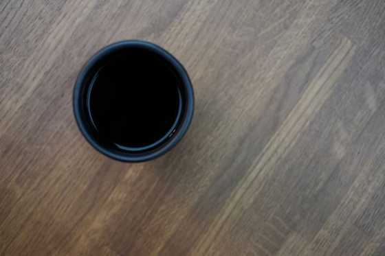
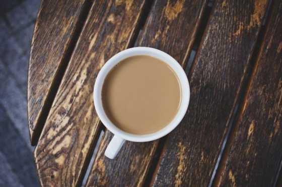
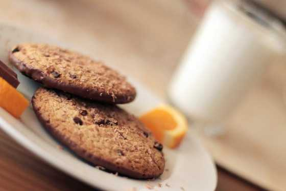
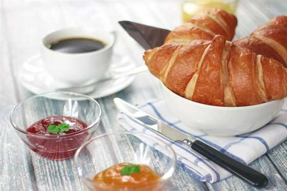

COFFEE STAND & BAKE / 阿南市大潟町
Lingonberry
coffeestand
細い道の先、海に近い古民家で、淹れたてのコーヒーと焼き菓子をひとやすみ。
コーヒーと焼き菓子(Bake)を味わう小さなスタンドです。営業時間・メニューの詳細は準備中。最新情報はInstagramでご確認ください。
Instagramを見るアクセス
ABOUT
お店のこと
阿南市の海岸に近い、細い道を抜けた先にある古民家を改装したコーヒースタンドです。ドリップコーヒーのほか、マフィンやスコーン、ブラウニーなどの焼き菓子が紹介されています(来訪者のブログ・口コミ掲載による)。
Instagramのプロフィールには「coffee stand」「Bake」とあり、コーヒーと焼き菓子のお店であることがうかがえます。
店名の「Lingonberry(リンゴンベリー、和名コケモモ)」の由来は確認できていません。北欧で親しまれる赤い小さな実という名前から、ここでは赤ぶどう酒色と苔色を配色に取り入れました。これは制作側のイメージです。

MENU
コーヒーと焼き菓子
紹介されている内容の範囲でお知らせします。価格・提供状況は準備中です。







写真はいずれもフリー素材のイメージで、実際のメニューとは異なります。
VOICE
口コミ(イメージ例)
イメージ例
海のそばの細い道を進んだ先に、静かな古民家がありました。ゆっくり飲むコーヒーが落ち着きます。
イメージ例
焼き菓子がコーヒーによく合いました。お土産にも持ち帰りたくなります。
イメージ例
散歩の途中に立ち寄れる、ほっとできる場所。また焼き菓子を食べに来たいです。
上の3件は制作側が考えたイメージ例で、実在のお客様の声ではありません。